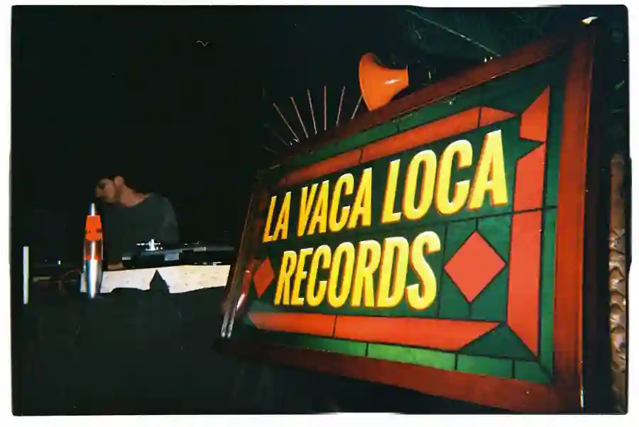

LA VACA LOCA RECORDSGUALACEO · ECUADOR
EL ESPACIO / 001
Visítanos.
Discos, sesiones y cultura musical. Conoce el espacio de La Vaca Loca Records en Gualaceo, Ecuador.

Un espacio para
escuchar.
La Vaca Loca Records es un proyecto independiente en Gualaceo, Ecuador, dedicado a los discos, las sesiones y la cultura musical. Un lugar para explorar sonidos, compartir ideas y descubrir música.
Las visitas se coordinan previamente para poder recibirte.
SOLICITAR UNA VISITACÓMO LLEGAR
Encuéntranos.
DIRECCIÓNGualaceo, Ecuador
Ubicación exacta pendiente de confirmar.
VEN A CONOCERNOS
Agenda tu
visita.
Cuéntanos cuándo te gustaría venir. Prepararemos un mensaje para WhatsApp y coordinaremos contigo la disponibilidad.
La solicitud no confirma automáticamente la visita. La cita se confirma por WhatsApp.